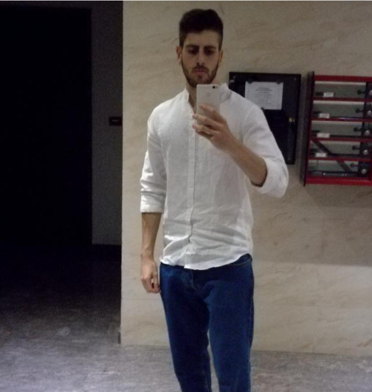

"NeoNote Turn Up the Neon,
Rock the Boat!"
La musica detta il ritmo, il pubblico decide il vincitore. Ascolta i 10 artisti emergenti in gara, partecipa alle challenge e vivi la finale live a Roma.

SCOPRI I CANDIDATI
Cerca tra i cantanti e le band in gara o candidati con il tuo brano inedito.
CANDIDATI IN EVIDENZA
Tutti i candidati →VOTAZIONI CANDIDATI (10 IN GARA)
Classifica completa →I 4 GIUDICI & I PRESENTATORI
🎙️ Conduzione Ufficiale & Backstage Host
Flavia Fedorca
Conduttrice ufficiale sul palco principale di Piazza S. Giovanni in Laterano a Roma, guida le esibizioni live e le votazioni del pubblico.
Artemisia Dahmani
Inviata nel backstage con gli artisti finalisti e host ufficiale delle Fan Challenge su TikTok, Telegram e WhatsApp.
★ Giuria Tecnica & Artistica
Giovanni Caputo
Produttore discografico e arrangiatore, valuta qualità sonora, originalità e costruzione del brano.
Renato de luca
Musicista e vocal coach con anni di esperienza live, giudica tecnica vocale ed espressività.
Walter Rambaldi
Direttore artistico e talent scout, analizza impatto radiofonico e potenziale discografico.

GIUDICE #4 • LIVE DIRECTOR & CRITICOGabriele Vitalba
Critico musicale e direttore di palco, valuta presenza scenica e connessione con il pubblico.
GALLERIA EVENTI PRECEDENTI
Vedi archivioÈ IL MOMENTO DI VOTARE